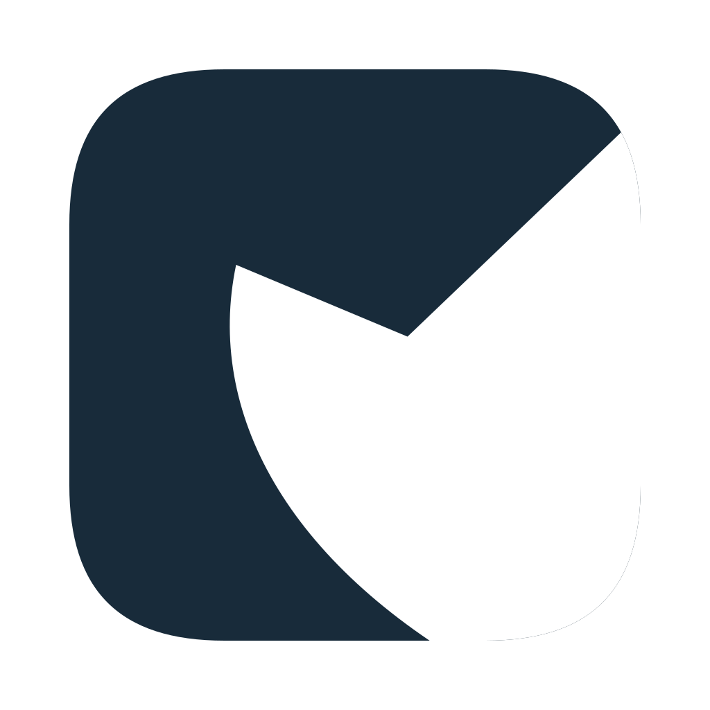
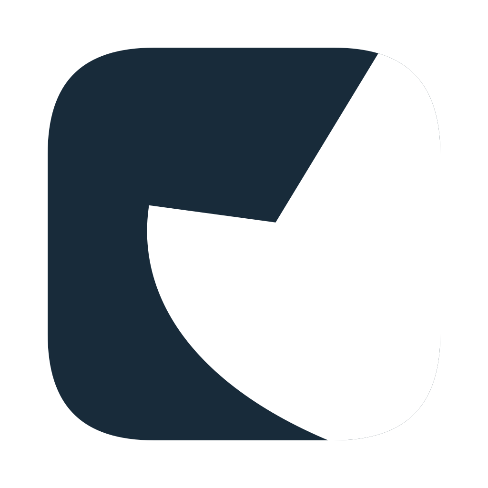
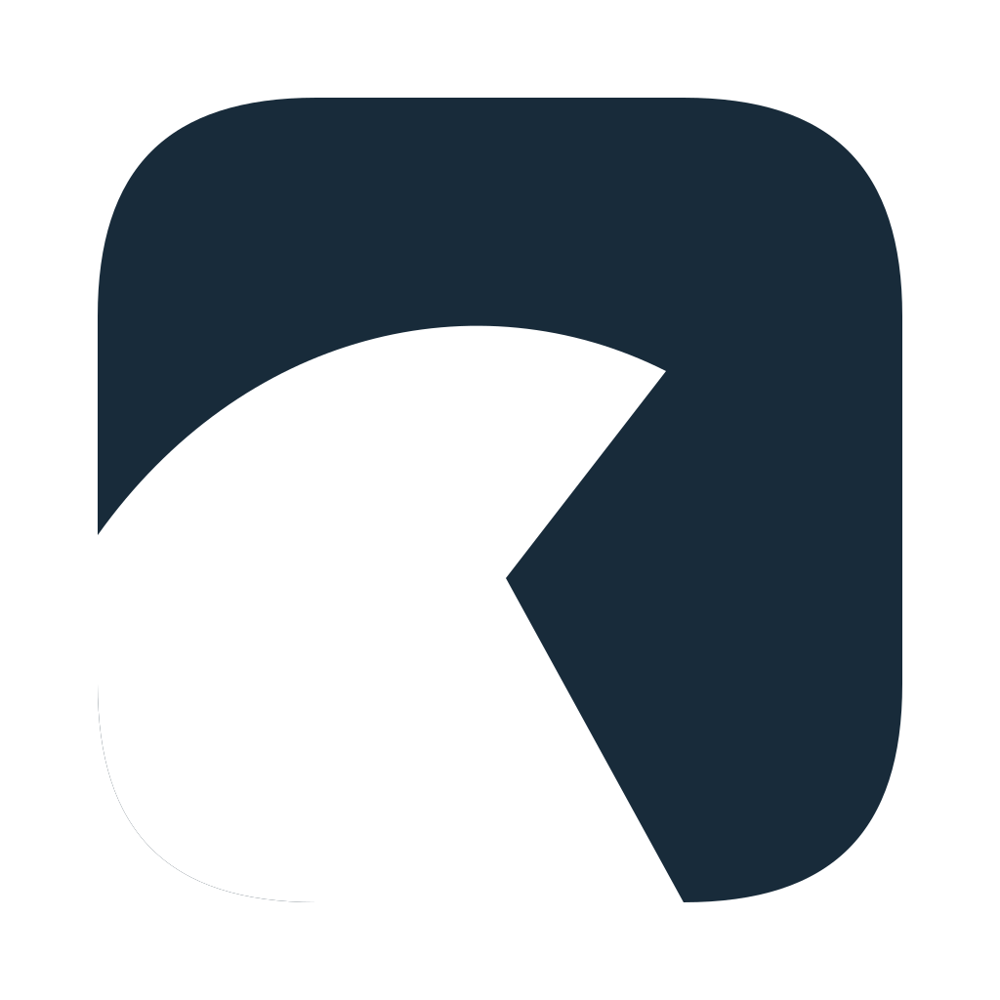
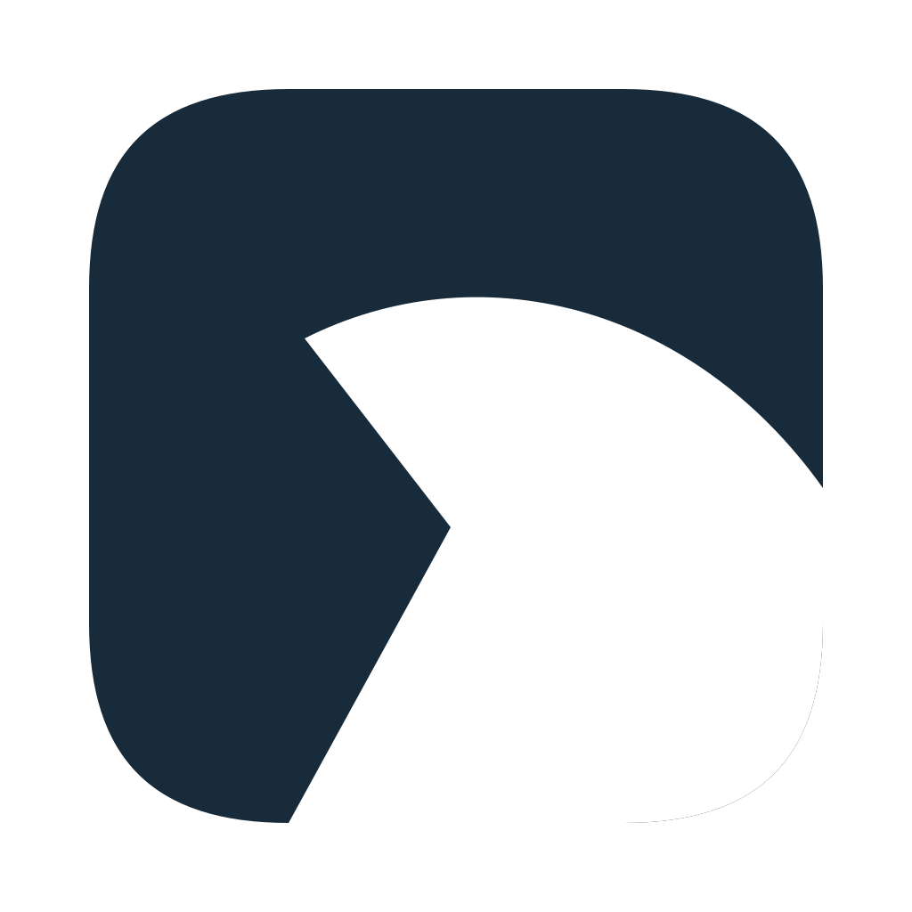
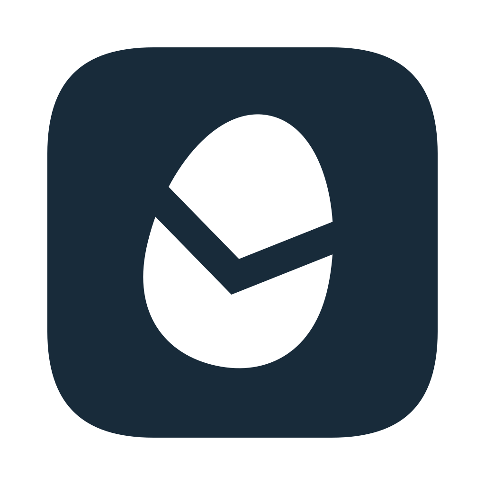
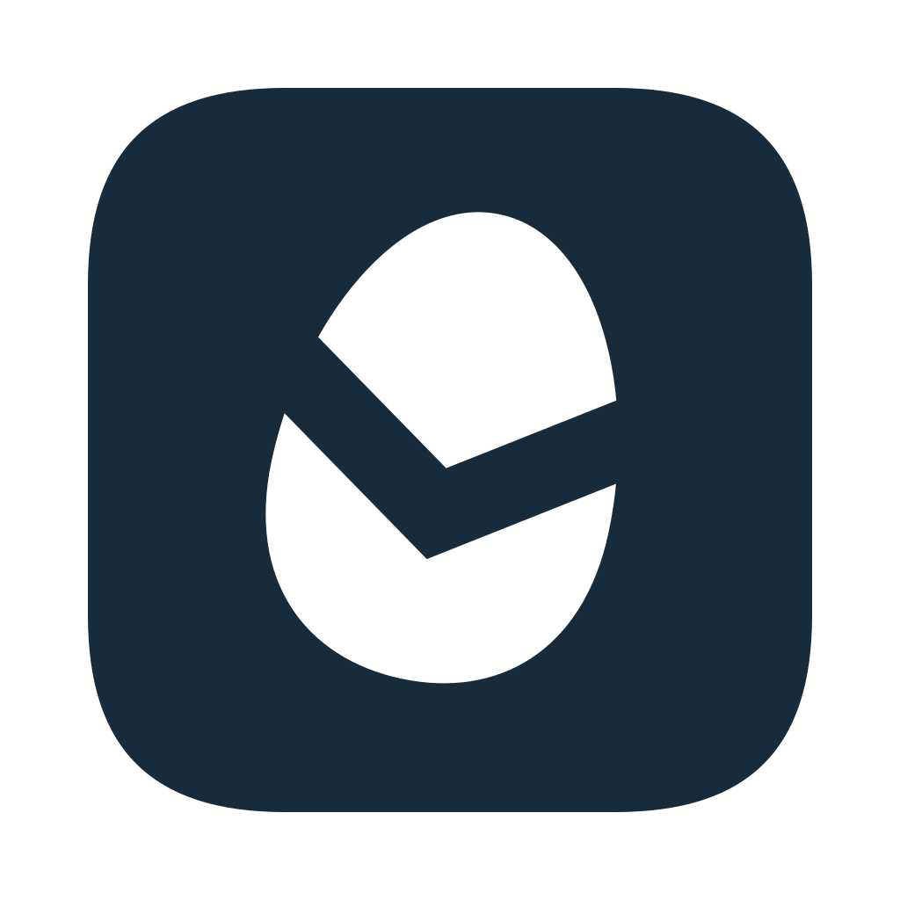

Tuxedo split
RECOMMENDED

Dark
32
16
−15° · White flap, curved ink back, a gentle forward point.
PENGUIN / ROUND 03
Four Tuxedo orientations. Two favorites carried forward.
200 / 64 / 32 / 16px · fixed squircle · 100px transparent margins · ink + white
−15° · White flap, curved ink back, a gentle forward point.

−30° · A steeper fold gives the bird a stronger direction.

90° · The envelope V turns into a left-facing ink beak.

Mirrored 90° · The same split points the bird to the right.
Raised slightly for balance; the small-size notch stays open.


32Round 2 unchanged · Tilted pebble with a broad envelope cut.
64px, same canvas and margins.
16–32px: optical files where needed.